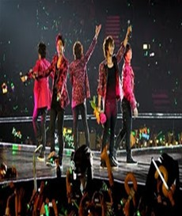

|  |
대만에서도 슈퍼주니어, SS501, 소녀시대, 비, 보아 등 K-POP 가수들의 인기가 뜨겁다. 대만은 한국 드라마에 대한 관심이 매우 높아, 히트 친 인기 드라마의 OST만 불러도 성공 가능성이 매우 높은 편이다. 대표적인 예로 '꽃보다 남자'의 OST를 부른 SS501은 2009년 10월 아시아투어 대만 공연에서 전석 매진 기록을 세우며 단박에 시장을 석권하였다. 이 같은 인기를 등에 업고 같은 해 12월 홍콩 컨벤션센터에서 열린 '2009 야후! 아시아 버즈 어워드'에서도 최고 그룹 상을 수상하였으며, 리더인 김현중은 아시아 최고 남자스타상과 대만 네티즌 선정 최고 한국 스타상을 수상하였다.
한편, 2010년 4월 18일 타이베이 시먼딩에서는 소녀시대 팬들 약 600명이 소녀시대 '오!'에 맞춰 거리에서 춤을 추는 이색 퍼포먼스를 벌였으며, 10월 17일 타이베이 아레나홀에서 열린 소녀시대 단독콘서트에서는, 당시 소녀시대가 대만 진출 전이었음에도 불구하고 공연 예매 시작 후 예약 서버가 바로 다운될 정도로 폭발적인 관심이 이어졌다. 이밖에도 슈퍼주니어는 대만 음악 사이트 'KKBox 한일차트'에서 30주 연속 1위를 차지하는 진기록을 달성하며 K-POP의 인기를 실감케 했다.